Cả ba dùng cùng khung mỏng mới (gờ 8 px thay 13-14 px, viền ngoài nhạt hơn, không rêu, không vân nứt, ô khắc góc nhỏ, mối nối đá thưa) và icon phẳng hơn (viền icon alpha 150/255). Chỉ khác cách tách khỏi nền world olive ấm. Nghiêng về: A2 Đá lạnh (tách bằng tông, không thêm lớp, đọc nhanh nhất ở 1080p); A3 nếu cần thêm tương phản.
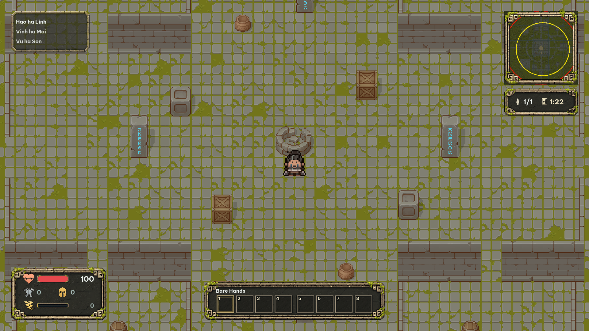
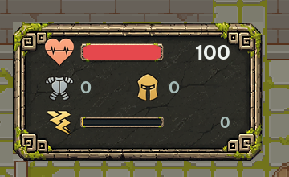
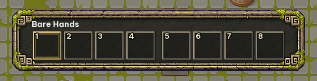
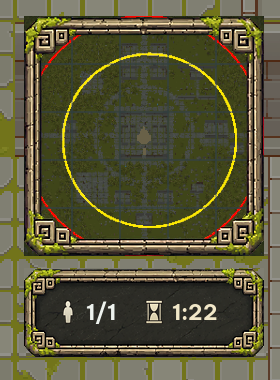
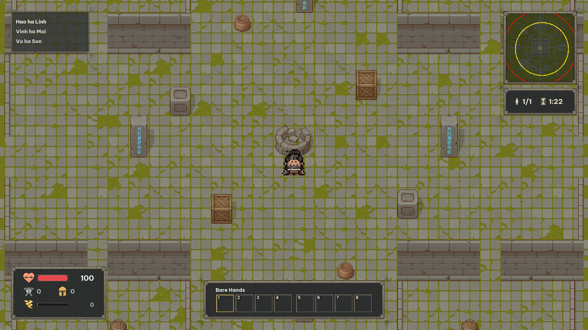
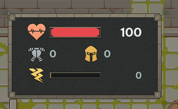
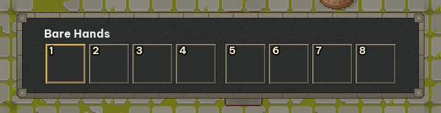
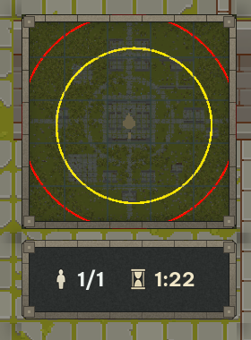
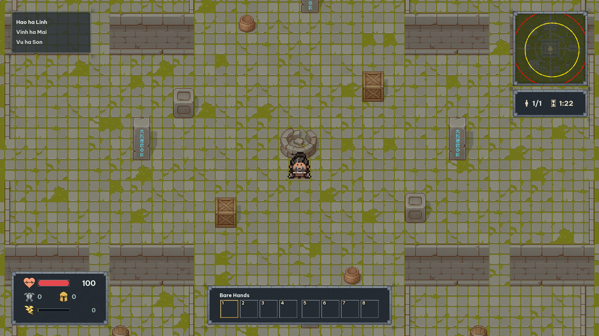
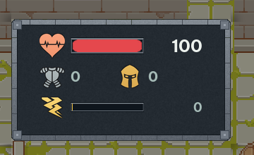
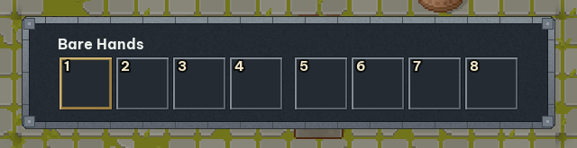
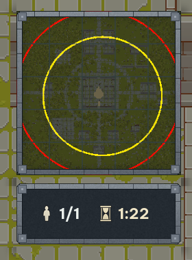
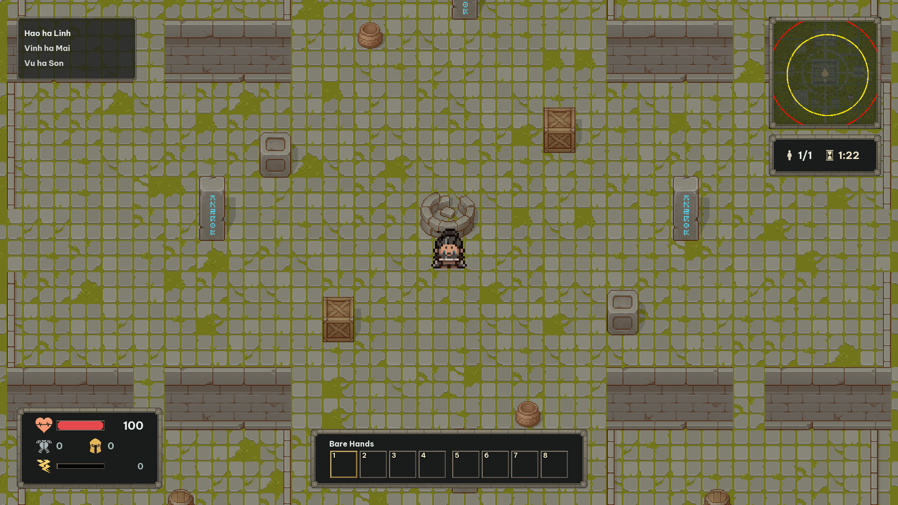
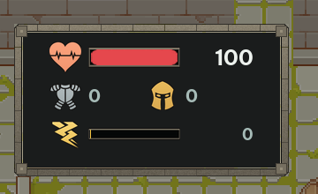
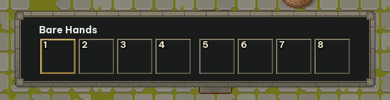
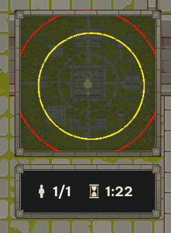